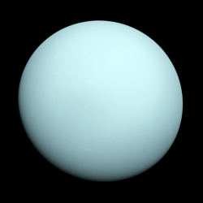
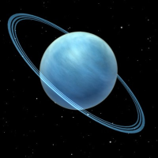

Uranus is the seventh planet in the solar system distancing itself from the sun with 2.877 billion km of space, causing Uranus the long wait of 84 years to complete one single orbit around the sun. Unlike all of the other planets named after Roman gods or goddess, Uranus was named after the Greek god of skies, Ouranos or ♅. Ranking at the 3rd largest planet Uranus covers a volume of 6.833×1013 km3 and a weight of (8.6810±0.0013) ×1025 giving Uranus the gravitational pull of 8.69 m/s2. Overall Uranus is pretty plain in the colouring as you only really see turquoise. With Uranus being so far away from the sun, the average temperature on Uranus is 76K and can even get as low as 47K, that's -226.15℃!
 Wikipedia, The Free Encyclopedia. (September 5, 2016) Uranus. Retrieved September 26, 2016, from https://en.wikipedia.org/wiki/Uranus
Digital Image: Uranus, ~https://upload.wikimedia.org/wikipedia/commons/thumb/3/3d/Uranus2.jpg/260px-Uranus2.jpg~ Retrieved September 26, 2016.
Digital Image: Rings of Uranus, ~http://brightmags.com/wp-content/uploads/2015/05/uranus-rings-300x300.jpg~ Retrieved September 26, 2016.